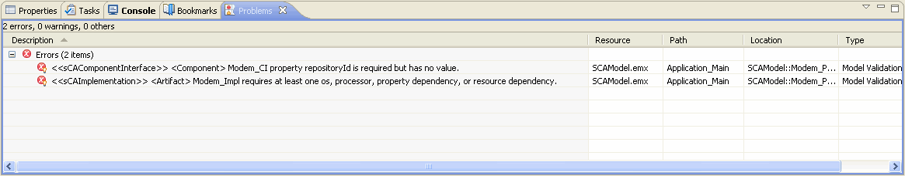

Validation can be invoked on a model or model element by selecting the SCA Validation context menu item.
After initiating validation, you are asked to wait while validation occurs. CX is verifying that the element you are validating is correct.
Cautions and warnings are displayed in the Problems View. Error and warning messages are fully detailed in the Problems View.
Because CX uses the Rational Software Modeler validation process, the validation uses a containment hierarchy. With this in mind, ensure you have selected the correct element or model.
To navigate to the source of any messages, follow these steps:
CX navigates to the source of the message.
The Project Explorer displays error icons that indicate the element causing the error.
